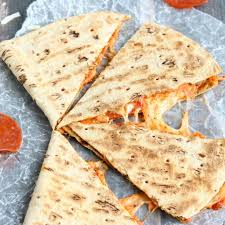

Ingredients:
- 2-8 inches flour tortillas
- 3 tablespoons spaghetti sauce or 3 tablespoons pizza sauce
- 1/4cup shredded cheese
- 8 slices pepperoni
Directions:
- These are made just like any other quesadilla or grilled cheese sandwich.
- Spray the bottom of a non-stick skillet with cooking spray and preheat.
- When the pan is fairly hot place 1 Flour Tortilla in the pan.
- Fairly quickly (because you want to get everything on before the bottom starts to brown) spread on a few tablespoons of sauce.
- Then add a layer of Pepperoni (and anything else you like).
- Then top with shredded cheese.
- Top it off with the 2nd Flour Tortilla.
- Just like any other quesadilla or grilled cheese let it brown then flip it over. If all of the cooking spray was absorbed you can spray on a little more, but you usually don't need to.
- After both sides are browned and the insides are hot and melted take the "pizzas" out to cool.
- Once cooled slice in 1/4 like a pizza and wrap snugly with plastic wrap or aluminum foil.
Preparation Time: 10-20 Mins
Difficulty: Easy